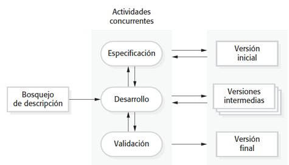
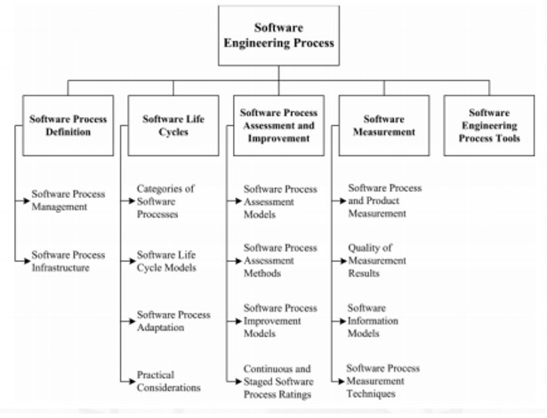

Introducción a Ingenieria de Software
Sitio recopilatorio de las clases impartidas durante la estadía del primer parcial de la materia de introduccíon a Software.
Sobre la pagina:
Este sitio alojado en un repositorio de GitHub, tiene la finalidad de recopilar todo lo enseñado durante el primer parcial de la materia de Introducción a Software de la mano del Ing. Angel Cuenca.
Introducción a la ingenieria de Software
FUNDAMENTOS A LA INGENIERÍA DE SOFTWARE
Bohem, 1976: Ingeniería del Software es la aplicación practica
del conocimiento científico en el diseño y construcción de
programas de computadora y la documentación necesaria
requerida para desarrollar, operar (funcionar) y mantenerlos.
Definición de IS (resumiendo)
La ingeniería de software es una aplicación práctica del
conocimiento cientifico para proveer metodologías y técnicas
que ayuden a desarrollar sistemas de software a tiempo y a su
vez que aseguren que el desarrollador cumpla con las
expectativas de calidad y permanezca dentro del presupuesto.
Objetivos de la IS:
Diseñar programas informáticos que se adecúen a las exigencias
de la sociedad.
Liderar y acoplar el desarrollo de programaciones complicadas.
Actuar en todas las fases del ciclo de vida de un producto.
Computar los costos de un proyecto y evaluar los 7empos de
desarrollo.
Realizar el seguimiento de costes y plazos.
Liderar equipos de trabajo de desarrollo software.
Objetivos de la IS (continúa)
Estructurar la elaboración de evidencias que comprueben el
perfecto funcionamiento de los programas y que se adaptan a
los requerimientos de análisis y diseño.
Diseñar, construir y administrar bases de datos.
Liderar y orientar a los programadores durante el desarrollo de
aplicaciones.
Incluir procesos de calidad en los sistemas, calculando métricas
e indicadores y chequeando la calidad del software producido.
Origen de IS:
Ingeniería del So-ware, es el término utlizado por Fritz Bauer en la
primera conferencia sobre desarrollo de so-ware patrocinada por el
Comité de Ciencia de la OTAN celebrada en Garmisch (Alemania), en
octubre de 1968, previamente había sido utilizado por el
holandés Edsger Dijkstra en su obra The Humble Programmer.
Puede definirse según Alan Davis como "la aplicación inteligente de
principios probados, técnicas, lenguajes y herramientas para la
creación y mantenimiento, dentro de un coste razonable, de sofware
que satisfaga las necesidades de los usuarios".
- Origen de IS (continúa)
Su origen se debió a que el entorno de desarrollo de sistemas
software adolecía de:
Retrasos considerables en la planificación
Poca productividad
Elevadas cargas de mantenimiento
Demandas cada vez más desfasadas frente a las ofertas
Baja calidad y fiabilidad del producto
Dependencia de los realizadores
-Esto es lo que se ha denominado habitualmente "crisis del
software", que históricamente se generó en los siguientes
pasos:
-Primera Fase. Los albores (1945-1955)
-Programar no es una tarea diferenciada del diseño de una
máquina.
-Uso de lenguaje máquina y ensamblador.
-Segunda Fase. El florecimiento (1955-1965)
-Aparecen multitud de lenguajes
-Se pensaba que era posible hacer casi todo.
-Tercera Fase. La crisis (1965-1970)-Desarrollo inacabable de grandes programas
-Ineficiencia, errores, coste impredecible
-Nada es posible.
-Cuarta Fase. Innovación conceptual (1970-1980)
-Fundamentos de programación
-Verificación de programas
-Metodologías de diseño.
-Quinta Fase. El diseño es el problema (1980-?)
-Entornos de programación
-Especificación formal
-Programación automática.
La evolución del software:
El término “evolución” del software se utiliza desde los sesenta
para denominar la dinámica de crecimiento del software.
Una definición atribuida a Lehman y Ramil dice que la evolución
del software es “todas las actividades de programación que se
orientan a generar una nueva versión de un so-ware a partir de
una versión anterior operativa.
La evolución del software (continúa)
-Ned Chapin 1(1999) lo definió como “la aplicación de las
ac7vidades y procesos de mantenimiento del so-ware que
generan una nueva versión operativa de un software con una
funcionalidad de usuario o propiedades cambiadas a partir de
una versión anterior […] junto con los procesos y actividades de
garantia de calidad y con la gestión de esos procesos”. De estas
definiciones se desprende que la evolución cubre el ajuste a
funcionalidades adicionales.
-La guía SWEBOK2 considera que la causa del mantenimiento
está tanto en la necesidad de “cambios” como de “evolución”
en el software.
La crisis del software:
¿Cómo se define crisis?
-La palabra crisis se define en el diccionario como "un punto
decisivo en el curso de algo; momento, etapa, o evento decisivo
o crucial". Sin embargo para el software no ha habido ningún
punto crucial, sólo una lenta evolución.
-La crisis en la industria del software permanece durante
muchos años, lo cual parece una contradicción para el término.
Lo que si se podría decir es que hay un problema crónico en el
desarrollo de software.
La crisis del software (continúa)
-Formalismo y metodología
-Herramientas de soporte
-Administración eficaz
La crisis del software
Actualmente está surgiendo una gran expectativa ante la evolución de
la Ingeniería del Software, al ir apareciendo nuevos métodos y herramientas
formales que van a permitir en el futuro un planteamiento de ingeniería en
el proceso de elaboración de software.
Dicho planteamiento permitirá dar respuesta a los problemas de:
- Administración
- Calidad
- Productividad
- Fácil mantenimiento
Este último es uno de los grandes problemas, pues puede llegar a suponer
un importe superior al 60% del total del coste del software.
¿Por qué se crea la IS?
-La ingeniería de software se crea debido a las siguientes características:
-El producto debe ser confiable y realizar sólo las tareas especificadas en los
requerimientos.
-El producto debe ser robusto. Esto quiere decir que el software se comporta
de manera razonable, incluso en circunstancias no anticipadas desde el
principio.
-El producto de software debe ser lo más reutilizable posible, de manera tal
que pueda ser incorporado en otro producto de software si se requiere.
-El producto de software debe ser eficiente en el uso de los recursos del
sistema.
¿Por qué se crea la IS? (continúa)
-Se requiere desarrollar el software en una manera que lo haga evolutivo,
de forma tal que se pueda agregar funcionalidad adicional sin efectos
perjudiciales.
-El producto de software debe cumplir con los requerimientos de
rendimiento especificados, es decir, debe cumplir algunas de las restricciones
relacionadas al rendimiento.
-El producto de software tendrá mayor valor si es portable, es decir que
puede trabajar bajo diferentes plataformas de software y ambientes
(hardware, sistemas operativos, etc.).
-El producto de software debe ser utilizable, es decir, el aprendizaje de su
uso debe ser los suficientemente sencillo por parte de personas no
especialistas.
El software en la actualidad:
Las direcciones en las que evoluciona la ingeniería del so-ware
hoy en día pueden agruparse de la siguiente manera:
-Metodologías ágiles: métodos de desarrollo de so-ware
basados en procesos itera7vos e incrementales, donde los
requisitos y soluciones evolucionan durante la colaboración.
Metodologías como Scrum (1995), Extreme Programming
(1999) o DSDM (1995) fueron evolucionando hasta que en
Febrero del 2001 se publicó “Manifesto for Agile So-ware
Development” para definir la aproximación ahora conocida
como metodologías ágiles.
El software en la actualidad (continúa)
-Experimentación: es una rama de la ingeniería del software
interesada en realizar experimentos sobre software, recolectar
datos y deducir leyes y teorías de los mismos.
-Desarrollo dirigido por modelos: primero se desarrollan
modelos textuales gráficos del software a construir, y
posteriormente se construye el software.
-Líneas de productos software, en lugar de productos
individuales.
FACTORES DE CALIDAD DEL SOFTWARE
- Concepto de Calidad: Conjunto de propiedades y de características de un producto o servicio, que le confieren aptitud para satisfacer una necesidad explícita o implícita (ISO 8402).
- Calidad del Software: Es el grado con el que un sistema, componente o proceso cumple los requerimientos especificados y las necesidades o expectativas del cliente o usuario.
- Factores que determinan la calidad del software.
- Se pueden clasificar en dos grandes grupos (Pressman):
-Medidas Directas: La medida o medición decimos que es directa, cuando disponemos de un instrumento de medida que nos muestra un resultado (generalmente numérico).
-Medidas Indirectas: Cuando hablamos de sistemas informáticos no siempre es posible realizar una medida directa, porque no disponemos del instrumento adecuado que nos permita realizar esa medición
MÉTRICAS DEL SOFTWARE
Son las que están relacionadas con el desarrollo del software como funcionalidad, complejidad, eficiencia.
Entre las métricas del software tenemos las siguientes:
1. Métricas técnicas: Se centran en las características del software. Aquí medimos la complejidad lógica y el grado de modularidad del sistema. Mide la estructura del sistema, el cómo está hecho.
2. Métricas de calidad: Son todas las métricas de software que definen de una u otra forma la calidad del software; tales como corrección, exactitud, integridad, facilidad de uso, estructuración o modularidad, pruebas, facilidad de mantenimiento, reusabilidad, cohesión del módulo, acoplamiento del módulo, etc.
Estas son los puntos críticos en el diseño, codificación, pruebas y mantenimiento.
Proporcionan una indicación de cómo se ajusta el software a los requisitos implícitos y explícitos del cliente. Es decir cómo voy a medir para que mi sistema se adapte a los requisitos que me pide el cliente.
- Corrección: es el grado en que el software desempeña la función para la que fue creado y se mide en defectos por KLDC.
- Facilidad de Mantenimiento: es la sencillez con que un programa puede corregirse si se encuentra un error, al adaptarse si su entorno cambio o mejorar si el cliente cambia los requisitos y se mide en forma indirecta en TMC (Tiempo Medio de Cambio).
- Integridad: es la habilidad de un sistema para resistir ataques que requiere la definición de amenaza y seguridad y se calcula: integridad = 1 – (amenaza * (1 – seguridad)).Proceso de Ingeniería de software
Por ejemplo, dados los siguientes valores de un paquete de base de datos en dos proyectos, podemos calcular la integridad.
- Solución:
-Integridad para el proyecto 1:
__Integridad = 1 – 0.7 * (1 – 0) = 0.3
-Integridad para el proyecto 2:
__Integridad = 1 – 0.2 * (1 - 0.8) = 0.96
- Si la amenaza (probabilidad de que un ataque ocurrirá) es 0.25, y la seguridad (posibilidad de repeler un ataque) es 0.95, la integridad del sistema es 0.99 (muy elevada).
- Si por otra parte, la probabilidad de amenaza fuera 0.5 y la posibilidad de repeler un ataque es solo 0.25, la integridad del sistema es 0.63 (inaceptablemente baja).
- Facilidad de uso: Es el intento por cuantificar la sencillez de una aplicación al utilizarla.
3. Métricas de Productividad: Se centran en el rendimiento del proceso de la ingeniería del software. Es decir qué tan productivo va a ser el software que voy a diseñar. Se refiere a las características del software.
4. Métricas de costo: se centra en el costo total del sistema informático.
5. Métricas orientadas al tamaño: Esta nos permite conocer el tiempo en el que se terminará el software y cuántas personas se necesitan para su desarrollo, aquí medimos las variables con las que desarrollamos el software.
Si una organización de software mantiene registros sencillos, se puede crear una tabla de datos orientados al tamaño, como la que muestra la figura, que lista cada proyecto de desarrollo de software y las medidas correspondientes de cada proyecto
- Con los datos registrados durante la elaboración del proyecto podemos generar al final de dicho proyecto el siguiente conjunto de métricas:
-Productividad = KLDC /Esfuerzo
-Calidad = Errores / LDC
-Documentación = Pp.doc./LDC
-Costo = $(000)/LDC
6. Métricas orientadas a la función o puntos de función
- Son medidas indirectas del software y del proceso por el cual se desarrolla. En lugar de calcular las líneas de código (LDC), las métricas de función se centran en la funcionalidad o utilidad del programa. Los puntos de función nos indican la medida de la productividad.
- Los puntos de función se obtienen utilizando una función empírica basado en medidas cuantitativas del dominio de información del software y valoraciones subjetivas de la complejidad del software.
PROBLEMAS EN EL DESARROLLO DE SOFTWARE
¿Qué es un proyecto software?
Haciendo uso de la definición de proyecto de la guía del PMBOK, y adaptándola a un proyecto software, podríamos definirlo como: “Un proyecto software es un esfuerzo temporal que se lleva a cabo para crear un producto software, servicio TI o resultado único.”
¿Pero que es el software?
Según la definición del IEEE, "software es la suma total de los programas de ordenador, procedimientos, reglas, la documentación asociada y los datos que pertenecen a un sistema de cómputo", y "un producto de software es un producto diseñado para un usuario".
El software puede dividirse en dos grandes categorías:
-Software de aplicaciones: se usan para proveer servicios a clientes y ejecutar negocios de forma más eficiente. El software de aplicaciones puede ser un sistema pequeño o uno grande integrado. Como ejemplos de este tipo de software estarían un sistema de cuentas, un sistema de planificación de recursos...
-Software de sistemas: El software de sistemas se usa para operar y mantener un sistema informático. Permite a los usuarios usar los recursos del ordenador directamente y a través de otro software. Algunos ejemplos de este tipo de software son los sistemas operativos, compiladores y otras utilidades del sistema.
Los proyectos software tienen características específicas que los hacen diferentes de otros proyectos de ingeniería.
La Ingeniería del Software es la rama de la ingeniería que crea y mantiene las aplicaciones de software usando tecnologías y prácticas de las ciencias de la computación, manejo de proyectos, ingeniería, el ámbito de la aplicación, y otros campos.
¿Por qué el software es diferente a cualquier otro proceso de fabricación? Podríamos identificar los siguientes motivos:
-El software se desarrolla, no se fabrica en el sentido clásico de la palabra. Ambas actividades se dirigen a la construcción de un "producto", pero los métodos son diferentes. Los costes del software se encuentran en la ingeniería, esto implica que los proyectos no se pueden gestionar como si lo fueran de fabricación.
-La juventud de la ingeniería del software con respecto a otras ingenierías, la mayoría del software se construye a medida, en vez de ensamblar componentes previamente creados. Aunque ya se están dando importantes pasos en esta dirección, que facilitaría en gran medida el desarrollo de aplicaciones informáticas.
-En el software, el recurso principal son las personas. No es siempre posible acelerar la construcción de software añadiendo personas porque la construcción de software requiere un esfuerzo en equipo. El equipo tiene que trabajar de forma coordinada y compartir un objetivo de proyecto común. Se necesita comunicación efectiva dentro del equipo.
-El software no se estropea, pero se deteriora. Durante su vida, el software sufre cambios (mantenimiento). Conforme se hacen los cambios, es bastante probable que se introduzcan nuevos defectos, lo que hace que el software se vaya deteriorando debido a estos cambios.
VISIÓN GENERAL DEL PROCESO DE INGENIERÍA DEL SOFTWARE
¿Cómo construir el sistema?
* Se diseñan las estructuras de los datos y los programas.
-Como se caracterizan las interfaces.
-Como realizar el paso del diseño al lenguaje de programación.
-Como ha de realizarse la prueba.
* Se escriben y documentan los programas.
* Y se prueba el software construido.
* Comienza una vez construido el sistema.
* Se centra en el cambio.
* El software es sometido a reparaciones y modificaciones cada vez que se detecta un fallo o se necesita cubrir una nueva necesidad de los usuarios.
* En esta fase recae el mayor porcentaje del costo de un sistema.
* Un buen sistema no es sólo un conjunto de programas que funcionan bien => Debe ser fácil de mantener
Tipos de mantenimiento.
-Correctivo. El programa no funciona correctamente, hay que modificarlo.
-Perfectivo. Se modifica el programa para obtener más eficiencia o nuevas funcionalidades no especificadas en la definición del sistema.
-Adaptativo. Adaptar el programa a los cambios en su entorno (cambio de SO, de CPU, de legislación, …)
-Preventivo. El software se deteriora con los cambios, este mantenimiento hace cambios para que los programas se puedan corregir, adaptar y mejorar más rápidamente -> Reingeniería del SW.
ESPONSABILIDAD ÉTICA Y PROFESIONAL EN INGENIERÍA DEL SOFTWARE
La IS se realiza dentro de un marco social y legal que limita la libertad de la gente que trabaja en dicha área.
Los ingenieros de software:
- Deben aceptar que su labor implica responsabilidades mayores que la simple aplicación de habilidades técnicas.
- Deben comportarse de forma ética y moralmente responsable para ser respetado como un ingeniero profesional.
Existen áreas donde los estándares de comportamiento aceptable no están acotados por las leyes, sino por la responsabilidad profesional, algunas de estas son:
- Confidencialidad. Respetar la confidencialidad de sus empleadores o clientes, independientemente de que se haya firmado un acuerdo formal de confidencialidad.
- Competencia. No debe falsificar su nivel de competencia, ni aceptar conscientemente trabajos que están fuera de su capacidad.
- Derechos de propiedad intelectual. Debe ser consciente de las leyes locales que gobiernan el uso de la propiedad intelectual, como las patentes el el copyright. Debe asegurarse de que la propiedad intelectual de los empleadores y clientes está protegida.
- Uso inapropiado de las computadoras. No debe emplear sus habilidades técnicas para utilizar de forma inapropiada las computadoras de otras personas. Desde los relativamente triviales (utilizar juegos en las maquina de un empleado, por ejemplo) hasta los extremadamente serios (difusión de virus).
CÓDIGO DE ÉTICA (ACM/IEEE)
Los ingenieros de software deberán comprometerse consigo mismo en convertir el análisis, especificación, diseño, desarrollo, prueba y mantenimiento de software en una profesión respetable y beneficiosa.
De acuerdo con su compromiso con la salud, seguridad y bienestar del público, los ingenieros de software deberán apegarse a ocho principios.
Público.- Los ingenieros de software deberán actuar consistentemente con el interés público.
Cliente y Empleador.- Los ingenieros de software deberán actuar de una forma determinada que esté en los mejores intereses de su cliente y empleador consistente con el interés público.
Producto.- Los ingenieros de software deberán asegurar que sus productos y modificaciones relacionadas logren el más alto estándar profesional posible.
Juicio.- Los ingenieros de software deberán mantener integridad e independencia al emitir su juicio profesional.
Gerencia.- Los gerentes y lideres de ingeniería de software deberán suscribirse y promocionar un enfoque ético para la gerencia de desarrollo y mantenimiento del software.
Profesión.- Los ingenieros de software deberán fomentar la integridad y reputación de la profesión consistente con el interés público.
Colegas.- Los ingenieros de software deberán ser justos y comprensivos con sus colegas.
Interés Propio. Los ingenieros de software deberán participar en el aprendizaje de por vida del ejercicio de su profesión y deberán promover un enfoque ético para el ejercicio de la misma.
Un sistema de información es un conjunto de elementos interrelacionados con el propósito de prestar atención a las demandas de información de una organización, para elevar el nivel de conocimientos que permitan un mejor apoyo a la toma de decisiones y desarrollo de acciones (Peña, 2006).
Conjunto de elementos que interactúan entre sí con el fin de apoyar las actividades de una empresa o negocio. Teniendo muy en cuenta el equipo computacional necesario para que el sistema de información pueda operar y el recurso humano que interactúa con el Sistema de Información, el cual está formado por las personas que utilizan el sistema.
Un sistema de información realiza cuatro actividades básicas: entrada, almacenamiento, procesamiento y salida de información (Peralta, 2008).
-Entrada de Información: Es el proceso mediante el cual el Sistema de Información toma los datos que requiere para procesar la información.
-Almacenamiento de información: El almacenamiento es una de las actividades o capacidades más importantes que tiene una computadora, ya que a través de esta propiedad el sistema puede recordar la información guardada en la sección o proceso anterior.
-Procesamiento de Información: Es la capacidad del Sistema de Información para efectuar cálculos de acuerdo con una secuencia de operaciones preestablecida.
-Salida de Información: La salida es la capacidad de un Sistema de Información para sacar la información procesada o bien datos de entrada al exterior.
Otro autor define que: Un sistema de información es el sistema de personas, registros de datos y actividades que procesa los datos y la información en cierta organización, incluyendo manuales de procesos o procesos automatizados. (s/a, 2008).
TIPOS DE SISTEMAS DE INFORMACIÓN
Los sistemas de información, de manera general se pueden clasificar de tres formas según sus propósitos generales, en este sentido Peralta (2008) clasifica los sistemas de información en tres tipos fundamentales: (1) Sistemas transaccionales; (2) Sistemas de Soporte a la Toma de Decisiones, Sistemas para la Toma de Decisión de Grupo, Sistemas Expertos de Soporte a la Toma de Decisiones y Sistema de Información para Ejecutivos y (3) Sistemas estratégicos.
• Sistemas transaccionales: Son Sistemas de Información que logran la automatización de procesos operativos dentro de una organización ya que su función primordial consiste en procesar transacciones tales como pagos, cobros, entradas, salidas, etc.
• Sistemas de Soporte a la Toma de Decisiones, Sistemas para la Toma de Decisión de Grupo, Sistemas Expertos de Soporte a la Toma de Decisiones y Sistema de Información para Ejecutivos: Son Sistemas de Información que apoyan el proceso de toma de decisiones.
• Sistemas Estratégicos: Son sistemas de información desarrollado en las organizaciones con el fin de lograr ventajas competitivas, a través del uso de la tecnología de información.
En dependencia del enfoque (tres en total), según reporta Peña (2006), los sistemas de información se pueden agrupar en una cierta clasificación, que brinda una idea esencial de su estructura y funcionamiento.
De acuerdo al elemento principal de proceso de la información, los sistemas de información pueden ser de tres tipos (Manual, Mecanizadas y Bath):
• Manuales: cuando el hombre auxiliado por cierto equipo (máquinas de escribir, sumadoras, archivos, etc.) realiza las principales funciones de recopilación, registro, almacenamiento, cálculo y generación de información.
• Mecanizadas: cuando cierta maquinaria realiza las principales funciones de procesamiento. Para los sistemas mecanizados que hacen uso de un computador, de acuerdo al tipo de interacción Hombre-Máquina, los sistemas de información pueden ser de dos tipos (Batch y en Línea]:
-Batch: el usuario proporciona los datos necesarios para la ejecución de un proceso y espera a que el computador termine la tarea para recibir los resultados;
-En Línea: existe un diálogo directo entre el usuario y el computador durante la ejecución de un proceso.
En cuanto a la organización física de los principales recursos de procesamiento de datos, los sistemas de información pueden ser de tipo:
• Procesos centralizados: los recursos se encuentran ubicados en un área física determinada, por lo que su acceso se realiza en las misma instalación o desde lugares retirados, mediante líneas de comunicación de datos (telefónicas, microondas, satélite, etc.).
• Proceso distribuido: los recursos se encuentran diseminados en diversos lugares de una zona territorial (ciudad, país, continente, etc.), por lo que el procesamiento se realiza en el propio lugar donde se originan los datos, existiendo la posibilidad de compartir información entre las diversas instalaciones, mediante la información de una “Red de Comunicación”.
ELEMENTOS DE UN SISTEMA DE INFORMACIÓN
Los sistemas de información, según Peña (2006), tienen 5 elementos importantes, estos son:
• Financieros
• Administrativos
• Humanos
• Materiales
• Tecnológicos
Sin embargo otro autor (s/a, 2008a) menciona que un sistema de información consiste en 3 elementos: humano, tecnología y organización. En teoría de sistemas, un sistema de información es un sistema automatizado o manual que involucra personas, máquinas y/o métodos organizados de recolección, procesos, transmisión, clasificación y divulgación de datos.
Otro autor desconocido (s/a, 2008b) plantea que un sistema de información está compuesto por 6 elementos claramente identificables, tal y como se muestran en la siguiente figura:
- Base de Datos: Es donde se almacena toda la información que se requiere para la toma de decisiones. La información se organiza en registros específicos e identificables;
- Transacciones: Corresponde a todos los elementos de interfaz que permiten al usuario: consultar, agregar, modificar o eliminar un registro específico de Información;
- Informes: Corresponden a todos los elementos de interfaz mediante los cuales el usuario puede obtener uno o más registros y/o información de tipo estadístico (contar, sumar) de acuerdo a criterios de búsqueda y selección definidos.
Los restantes elementos de un sistema de información son:
- Procesos: Corresponden a todos aquellos elementos que, de acuerdo a una lógica predefinida, obtienen información de la base de datos y generan nuevos registros de información. Los procesos sólo son controlados por el usuario (de ahi que aparezca en línea de puntos);
- Usuario: Identifica a todas las personas que interactúan con el sistema, esto incluye desde el máximo nivel ejecutivo que recibe los informes de estadísticas procesadas, hasta el usuario operativo que se encarga de recolectar e ingresar la información al sistema y
- Procedimientos Administrativos: Corresponde al conjunto de reglas y políticas de la organización, que rigen el comportamiento de los usuarios frente al sistema. Particularmente, debieran asegurar que nunca, bajo ninguna circunstancia un usuario tenga acceso directo a la Base de Datos.
PROCESO DEL SOFTWARE
EL PROCESO DEL SOFTWARE
- Conjunto de actividades necesarias para transformar las ideas iniciales del usuario, que desea automatizar un determinado trabajo, en software.
- Conjunto ordenado de actividades; una serie de pasos que involucran tareas, restricciones y recursos que producen una determinada salida esperada.
- Marco de trabajo de las tareas que se requieren para construir software de alta calidad.
- Un conjunto estructurado de actividades necesarias para desarrollar un sistema de software.
Muchos de los procesos de software son diferentes, pero todos implican:
-Especificación;
-Diseño e implementación;
-Validación;
-Evolución.
CARACTERÍSTICAS DEL PROCESO DE SW
Cualquier proceso tiene las siguientes características:
- El proceso establece todas las actividades principales.
- El proceso utiliza recursos, está sujeto a una serie de restricciones y genera productos intermedios y finales
- El proceso puede estar compuesto de subprocesos que se encadenan de alguna manera. Puede definirse como una jerarquía de procesos organizada de modo que cada subproceso tenga su propio modelo de proceso
- Cada actividad del proceso tiene criterios de entrada y de salida, de modo que se conoce cuándo comienza y cuándo termina una actividad.
- Las actividades se organizan en secuencia de modo que resulta claro cuando una actividad se realiza en orden relativo a otras actividades.
- Todo proceso tiene un conjunto de principios orientadores que explican las metas de cada actividad.
- Las restricciones o controles pueden aplicarse a una actividad, recurso o producto
OTRAS CARACTERÍSTICAS DEL PROCESO DE SW
- Comprensión
-Está definido y es comprensible
- Visibilidad
-Se visualizan los progresos externamente
*Soporte
-Está soportado por herramientas CASE
*Aceptación
-Es aceptable para todos los actores implicados
*Confianza
-Los errores del proceso se detectan antes de que se produzcan errores en el producto
*Robustez
-Se puede continuar a pesar de problemas inesperados
*Capacidad de mantenimiento
-Puede ajustarse a las necesidades de cambio de la organización
* Rapidez
-Con qué “velocidad” se producen los sistemas
*Adaptación
-Capacidad que tiene un usuario del mismo de adaptarlo a sus necesidades
IMPORTANCIA DEL PROCESO DE SW
Un proceso software debe especificar:
* La secuencia de actividades a realizar por el equipo de desarrollo
-Flujo de actividades
* Los productos que deben crearse
-Resultados del trabajo (modelos, documentos, datos informes...)
- Qué y cuándo
*La asignación de tareas a cada miembro del equipo y al equipo como un todo
-Los criterios para controlar el proceso
- Se establece el control de gestión de los proyectos software
- Establecimiento de hitos
Las posibles heurísticas
- Facilita la gestión del proyecto
- Establece una división del trabajo
* Facilita la comunicación de los miembros del equipo
-Permite la reasignación y la reutilización de personal especializado
-Transferencia entre proyectos
* Mejora la productividad y el desarrollo
-El desarrollo es reproducible
* Establece el contexto en el que se aplican los métodos técnicos
* Gestiona el cambio adecuadamente
* Asegura la calidad
ESTÁNDARES RELACIONADOS CON EL PROCESO DE SW
ESTÁNDAR ISO/IEC/IEEE 12207:2017
- El estándar ISO/IEC/IEEE 12207:2017 [ISO/IEC/IEEE, 2017] relativo a los procesos del ciclo de vida del software
- Se aplica a la adquisición de sistemas de software, productos y servicios, al suministro, desarrollo, operación, mantenimiento y eliminación de productos de software o componentes de software de cualquier sistema, ya sea que se realice interna o externamente a una organización.
- Se incluyen aquellos aspectos de la definición del sistema necesarios para proporcionar el contexto de los productos y servicios de software.
- También proporciona procesos que pueden emplearse para definir, controlar y mejorar los procesos del ciclo de vida del software dentro de una organización o de un proyecto.
- Esta norma no fomenta o especifica ningún modelo concreto de ciclo de vida, gestión del software o método de ingeniería, ni prescribe cómo realizar ninguna de las actividades.
CICLO DE VIDA DEL SW
* Cuando un proceso implica la construcción de algún producto, suele referirse al proceso como un ciclo de vida
-El proceso de desarrollo de software suele denominarse ciclo de vida del software
* La evolución del software representa el ciclo de ac7vidades involucradas en el desarrollo, uso y mantenimiento de sistemas software [Scacchi, 1987].
* Los proyectos software se desarrollan en una serie de fases.
-Van desde la concepción del software y su desarrollo inicial hasta su puesta en funcionamiento y posterior retirada por otra nueva generación de software
Estas fases pueden ser:
-Temporales.- Forman una secuencia en el tiempo
-Lógicas.- Cuando representan pasos o etapas que no constituyen una secuencia temporal
Se puede definir ciclo de vida del software como:
-Las distintas fases por las que pasa el software desde que nace una necesidad de mecanizar un proceso hasta que deja de utilizarse el software que sirvió para ese objetivo, pasando por las fases de desarrollo y explotación [Frakes et al., 1991]
-El período de tiempo que comienza cuando se concibe un producto software y finaliza cuando el producto pierde su utilidad. El ciclo de vida del software incluye las siguientes fases: fase de requisitos, fase de diseño, fase de realización, fase de pruebas, fase de instalación y aceptación, fase de operación y mantenimiento y, algunas veces, fase de retirada [AECC, 1986]
-Un marco de referencia que contiene los procesos, las actividades y las tareas involucradas en el desarrollo, la explotación y el mantenimiento de un producto de software, abarcando la vida del sistema desde la definición de requisitos hasta la finalización de su uso [ISO/IEC, 2008]
-Una aproximación lógica a la adquisición, el suministro, el desarrollo, la explotación y el mantenimiento del software IEEE Std 1074-1997 Standard for Developing Software Life Cycle Processes [IEEE, 1999b]
-El ciclo de vida del software consiste de las siguientes fases: análisis de requisitos, diseño, implementación, prueba y mantenimiento. El proceso de desarrollo tiende a una iteración de estas fases más que a un proceso lineal [CERN, 1996].
-El ciclo de vida del software usa el modelo de que un elemento software tiene vida. Un elemento software tiene una fase de concepción (una idea en una mente de un usuario potencial), después de una fase de gestación (la fase de desarrollo del software) hacia una fase de madurez (la revisión y corrección de errores, o fase de mantenimiento), y finalmente la fase de retirada [Leaney, 2004]
Se puede definir ciclo de desarrollo del software como:
-El período de tiempo que comienza con la decisión de desarrollar un producto software y finaliza cuando se ha entregado éste. Este ciclo incluye, en general, una fase de requisitos, una fase de diseño, una fase de implantación, una fase de pruebas, y a veces, una fase de instalación y aceptación [AECC, 1986]
ÁMBITO GENERAL DEL CICLO DE VIDA DEL SW
Desde un punto de vista general puede considerarse que el ciclo de vida de un software tiene tres etapas claramente diferenciadas:
- Planificación: idearemos un planeamiento detallado que guíe la gestión del proyecto, temporal y económicamente.
- Implementación: acordaremos el conjunto de actividades que componen la realización del producto.
- Puesta en producción: nuestro proyecto entra en la etapa de definición, allí donde se lo presentamos al cliente o usuario final, sabiendo que funciona correctamente y responde a los requerimientos solicitados en su momento. Esta etapa es muy importante no sólo por representar la aceptación o no del proyecto por parte del cliente o usuario final sino por las múltiples dificultades que suele presentar en la práctica, alargándose excesivamente y provocando costos no previstos.
OBJETIVOS DE CADA ETAPA
En cada una de las etapas de un modelo de ciclo de vida, se pueden establecer una serie de objetivos, tareas y actividades que lo caracterizan.
- Expresión de necesidades: esta etapa tiene como objetivo el armado de un documento en el cual se reflejan los requerimientos y funcionalidades que ofrecerá al usuario el sistema a implementar (qué, y no cómo, se va a implementar).
- Especificaciones: formalizamos los requerimientos; el documento obtenido en la etapa anterior se tomará como punto de partida para esta etapa.
- Análisis: determinamos los elementos que intervienen en el sistema a desarrollar, su estructura, relaciones, evolución temporal, funcionalidades, tendremos una descripción clara de qué producto vamos a construir, qué funcionalidades aportará y qué comportamiento tendrá.
- Diseño: ya sabemos qué hacer, ahora tenemos que determinar cómo debemos hacerlo (¿cómo debe ser construido el sistema en cuestión?; definimos en detalle entidades y relaciones de las bases de datos, seleccionamos el lenguaje que vamos a utilizar, el Sistema Gestor de Bases de Datos, etc.).
- Implementación: empezamos a codificar algoritmos y estructuras de datos, definidos en las etapas anteriores, en el correspondiente lenguaje de programación o para un determinado sistema gestor de bases de datos. En muchos proyectos se pasa directamente a esta etapa; son proyectos muy arriesgados que adoptan un modelo de ciclo de vida de code & fix (codificar y corregir) donde se eliminan las etapas de especificaciones, análisis y diseño con la consiguiente pérdida de control sobre la gestión del proyecto.
- Debugging: el objetivo de esta etapa es garantizar que nuestro programa no contiene errores de diseño o codificación. En esta etapa no deseamos saber si nuestro programa realiza lo que solicitó el usuario, esa tarea le corresponde a la etapa de implementación. En ésta deseamos encontrar la mayor cantidad de errores. Todos los programas contienen errores: encontrarlos es cuestión de tiempo. Lo ideal es encontrar la mayoría, si no todos, en esta etapa. También se pueden agregar testeos de performance.
- Validación: esta etapa tiene como objetivo la verificación de que el sistema desarrollado cumple con los requerimientos expresados inicialmente por el cliente y que han dado lugar al presente proyecto. En muchos proyectos las etapas de validación y debugging se realizan en paralelo por la estrecha relación que llevan. Sin embargo, tenemos que evitar la confusión: podemos realizarlos en paralelo, pero no como una única etapa.
- Evolución: en la mayoría de los proyectos se considera esta etapa como Mantenimiento y evolución, y se le asigna, no sólo el agregado de nuevas funcionalidades (evolución); sino la corrección de errores que surgen (mantenimiento). En la práctica esta denominación no es del todo errónea, ya que es posible que aun luego de una etapa de debugging y validación exhaustiva, se filtren errores.
¿MODELO DE PROCESO DE SW?
Hay varios modelos de procesos definidos en la bibliografía de Ingeniería del Software
Cada modelo de proceso representa un proceso desde una perspectiva particular, por lo que sólo ofrece una información parcial sobre dicho proceso.
¿MODELO DE PROCESO DE SW?
Hay varios modelos de procesos definidos en la bibliografía de Ingeniería del Software
Cada modelo de proceso representa un proceso desde una perspectiva particular, por lo que sólo ofrece una información parcial sobre dicho proceso.
RAZONES PARA MODELAR UN PROCESO DE SW
* Cuando se pone por escrito una descripción de un proceso, se da forma a una comprensión común de las actividades, recursos y restricciones relacionados con el desarrollo del software.
* Ayuda al equipo de desarrollo a encontrar las inconsistencias, las redundancias y las omisiones en el proceso y en las partes que lo constituyen.
* El modelo debe reflejar las metas del desarrollo. A medida que se construye el modelo el equipo de desarrollo evalúa las actividades candidatas por su adecuación para alcanzar dichas metas.
* Ayuda al equipo de desarrollo a comprender dónde debe adaptarse el proceso
* Los modelos de proceso de desarrollo de software incluyen los requisitos del sistema como entrada y un producto entregado como salida
MODELO GENERAL DE PROCESO EN INGENIERÍA
* Especificación
Formulación de los requisitos y restricciones del sistema
* Diseño
Elaboración de un documento con el modelo del sistema
* Fabricación
Construcción del sistema
* Prueba
Comprobación de que el sistema cumple las especificaciones requeridas
* Instalación
Entrega del sistema al cliente y garantía de que es operativo
* Mantenimiento
Reparación de los fallos que aparecen en el sistema
En el proceso de construcción de sistemas informáticos se pueden distinguir tres fases genéricas:
* Fase de definición
Se identifican los requisitos claves del sistema y del software
Se desarrolla
-Un Análisis de Sistemas
--Se define el papel de cada elemento en el sistema automatizado de información, incluyendo el que jugará el software
-Un Análisis de Requisitos
--Se especifican todos los requisitos de usuario que el sistema tiene que satisfacer
--Esta fase está orientada al QUÉ
---Qué información ha de ser procesada, qué función y rendimiento se desea, qué interfaces han de establecerse, qué ligaduras de diseño existen y qué criterios de validación se necesitan para definir un sistema correcto
Existe un paso complementario: la planificación del proyecto software:
-Se asignan los recursos
-Se estiman los costos
-Se planifican las tareas y el trabajo
* Fase de desarrollo
Fase orientada al CÓMO
El primer paso de esta fase corresponde al Diseño del Software
-Se trasladan los requisitos del software a un conjunto de representaciones que describen la estructura de datos, arquitectura del software y procedimientos algorítmicos que permiten la construcción física de dicho software.
Los otros dos pasos de la fase de desarrollo corresponden a la Codificación y a la Prueba del Software
* Fase de mantenimiento
-Mantenimiento correctivo
--Corrección de errores
-Mantenimiento adaptativo
--Adaptaciones requeridas por la evolución del entorno del software
-Mantenimiento perfectivo
--Las modificaciones debidas a los cambios de requisitos del usuario para mejorar el sistema
-Mantenimiento preventivo
--Mejora de las características internas del producto para hacer más mantenible
MODELO DE PROCESOS DE SOFTWARE
Modelo de Plan-impulsado. Fases separadas y distintas de especificación y desarrollo.
Especificación, desarrollo y validación se intercalan. Puede ser el plan impulsado o ágil.
Ingeniería de software orientado a reutilización
-El sistema se ensambla a partir de componentes existentes. Puede ser el plan impulsado o ágil.
En la práctica, la mayoría de los grandes sistemas se desarrollan mediante un proceso que incorpora elementos de todos estos modelos.
MODELO CASCADA
Las fases están identificadas por separado:
• El análisis y definición de requerimientos
• Diseño del sistema y software.
• Pruebas de implementación de unidades
• Integración y pruebas del sistema
• Operación y mantenimiento
El principal inconveniente del modelo de la cascada es la dificultad de acomodar el cambio después de que está en marcha el proceso. En principio, una fase tiene que ser completada antes de pasar a la siguiente fase.
• Inflexible división del proyecto en fases distintas hace que sea difícil responder a las necesidades cambiantes de los clientes.
• Por lo tanto, este modelo sólo es apropiado cuando los requisitos son bien entendidos y los cambios serán bastante limitados durante el proceso de diseño.
• Pocos sistemas tienen requisitos estables.
• El modelo de cascada se utiliza sobre todo para los grandes proyectos de ingeniería de sistemas en que un sistema se desarrolla en varios lugares
DESARROLLO INCREMENTAL
• El costo de atender las necesidades cambiantes de los clientes se reduce.
--La cantidad de análisis y la documentación que tiene que ser hecho de nuevo es mucho menor que la que se requiere con el modelo de cascada.
• Es más fácil obtener retroalimentación de los clientes en el trabajo de desarrollo que se ha hecho.
--Los clientes pueden hacer comentarios sobre las manifestaciones del software y ver cuánto se ha implementado.
• Más rápida entrega y despliegue de software de utilidad para el cliente es posible.
--Los clientes pueden usar y obtener valor a partir del software anterior que es posible con un proceso de cascada.
• El proceso no es visible.
--Los gerentes necesitan entregas regulares para medir el progreso. Si se desarrollan rápidamente los sistemas, no es rentable para producir documentos que reflejen todas las versiones del sistema.
• Estructura del sistema tiende a degradarse a medida que se añaden nuevos incrementos.
--A menos tiempo y dinero que se gasta en la refactorización para mejorar el software, cambio regular tiende a corromper su estructura. La incorporación de nuevos cambios de software se vuelve cada vez más difícil y costoso.
ESPIRAL
• Es un modelo de ciclo de vida desarrollado por Barry Boehm en 1988.
• Las actividades de este modelo son una espiral, cada bucle es una actividad.
• Las actividades no están fijadas a prioridad, sino que las siguientes se eligen en función del análisis de riesgo, comenzando por el bucle interior.
• En este modelo, el esfuerzo de desarrollo es iterativo. Tan pronto como uno completa un esfuerzo de desarrollo, otro comienza. Además, en cada desarrollo ejecutado, puedes seguir estos cuatros pasos.
1. Determinar qué quieres lograr.
2. Determinar las rutas alternativas que puedes tomar para lograr estas metas. Por cada una, analizar los riesgos y resultados finales, y seleccionar la mejor.
3. Seguir la alternativa seleccionada en el paso 2.
4. Establecer qué tienes terminado.
• Decidir qué problema se quiere resolver antes de viajar a resolverlo.
• Examinar tus múltiples alternativas de acción y elegir una de las más convenientes.
• Evaluar qué tienes hecho y qué tienes que haber aprendido después de hacer algo.
• No ser tan ingenuo para pensar que el sistema que estás construyendo será "EL" sistema que el cliente necesita, y
• Conocer (comprender) los niveles de riesgo, que tendrás que tolerar.
El Modelo Espiral mejora el Modelo de Cascada enfatizando la naturaleza iterativa del proceso de diseño. Eso introduce un ciclo de prototipo iterativo. En cada iteración, las nuevas expresiones que son obtenidas transformando otras dadas son examinadas para ver si representan progresos hacia el objetivo.
PRIMER PASO. Identificación de:
• Los objetivos de la parte del producto que está siendo elaborada (rendimientos, funcionalidad, adaptación al cambio, etc.).
• Las alternativas principales de la implementación de esta porción del producto (usar el diseño A, usar el diseño B, reutilizar el módulo X de la aplicación Z, comprar a un proveedor externo, etc.).
• Las restricciones impuestas para cada alternativa (costes, planificaciones, interfaces, etc.).
SEGUNDO PASO
• Evaluar las diferentes alternativas que se plantean teniendo en cuenta los objetivos a conseguir y las restricciones impuestas. Frecuentemente, este paso identifica las áreas de incertidumbre del proyecto con sus correspondientes riesgos.
• Si existen riesgos, lo siguiente es la formulación de una estrategia efectiva en coste (utilizando prototipos, simulación, bancos de prueba, cuestionario para los usuarios, modelización analítica o combinaciones de éstas y otras técnicas de resolución de riesgos) para resolver dichos riesgos.
TERCER PASO. Consiste en desarrollar, verificar y validar (probar):
• Tareas de la actividad propia y de prueba.
• Análisis de alternativas e identificación resolución de riesgos.
• Dependiendo del resultado de la evaluación de los riesgos, se elige un modelo para el desarrollo, el que puede ser cualquiera de los otros existentes, como formal, evolutivo, cascada, etc.
CUARTO PASO. Revisar todo lo hecho, evaluándolo, y con ello decidir si se continúa con las fases siguientes y planificar la próxima actividad.
• En cada giro se construye un nuevo modelo del sistema completo.
• Este modelo puede combinarse con otros modelos de proceso de desarrollo (cascada, evolutivo).
• Mejor modelo para el desarrollo de grandes sistemas.
• El análisis de riesgo requiere la participación de personal altamente calificado.
• El modelo en espiral puede adaptarse y aplicarse a lo largo de la vida del software de computadora.
• Como el software evoluciona a medida que progresa el proceso, el desarrollador y el cliente comprenden y reaccionan mejor ante riesgos en cada uno de los nivele evolutivos.
• El modelo en espiral permite a quien lo desarrolla aplicar el enfoque de construcción de prototipos en cualquier etapa de evolución del producto.
• El modelo en espiral demanda una consideración directa de los riesgos técnicos en todas las etapas del proyecto y si se aplica adecuadamente debe reducir los riesgos antes de que se conviertan en problemas.
• En la utilización de grandes sistemas a doblado la productividad.
DESARROLLO RÁPIDO DE APLICACIONES (DRA)
• Es un modelo de proceso del ciclo de vida clásico que enfatiza un ciclo de vida de desarrollo extremadamente corto.
• El modelo DRA es una adaptación a alta velocidad del ciclo de vida clásico en el que se logra el desarrollo rápido utilizando un enfoque de construcción basado en componentes. Si se comprenden bien los requisitos y se limita el ámbito del proyecto, el proceso DRA permite al equipo de desarrollo crear un sistema completamente funcional dentro de períodos cortos de tiempo.
• Cuando se utiliza principalmente para aplicaciones de sistemas de información, el enfoque DRA comprende las siguientes fases:
--Modelado de gestión: El flujo de información entre las funciones de gestión se modela de forma que responda a las siguientes preguntas: ¿Qué información conduce el proceso de gestión? ¿Qué información se genera? ¿Quién la genera? ¿A dónde va la información? ¿Quién la procesa?
--Modelado de datos: El flujo de información definido como parte de la fase de modelado de gestión refina como un conjunto de objetos de datos necesarios para apoyar la empresa. Se definen las características de cada uno de los objetos y relaciones entre estos objetos.
--Modelado de procesos: Los objetos de datos definidos en la fase de modelado de datos quedan transformados para lograr el flujo de información necesario para implementar una función de gestión. Las descripciones se crean para añadir, modificar, suprimir, o recuperar un objeto de datos.
--Generación de aplicaciones: El DRA asume la utilización de técnicas de cuarta generación. En lugar de crear software con lenguajes de programación de tercera generación, el proceso DRA trabaja para volver a utilizar componentes de programas ya existentes (cuando es posible) o a crear componentes reutilizables (cuando sea necesario). En todos los casos se utilizan herramientas automáticas para facilitar la construcción del software.
--Prueba y entrega: Como el proceso DRA enfatiza la reutilización, ya se han comprobado muchos de los componentes de los programas. Esto reduce tiempo de pruebas. Sin embargo, se deben probar todos los componentes nuevos y se deben ejercitar todas las interfaces a fondo.
--Prueba y entrega: Como el proceso DRA enfatiza la reutilización, ya se han comprobado muchos de los componentes de los programas. Esto reduce tiempo de pruebas. Sin embargo, se deben probar todos los componentes nuevos y se deben ejercitar todas las interfaces a fondo.
Las limitaciones de tiempo impuestas en un proyecto DRA demandan ámbito en escalas.
• Si una aplicación de gestión puede modularse de forma que permita completarse cada una de las funciones principales en menos de tres meses, es el candidato del DRA.
• Cada una de las funciones puede ser afrontada por un equipo DRA diferente y ser integradas en un solo conjunto.
• Para proyectos grandes aunque por escalas, el DRA requiere recursos humanos suficientes como para crear el número correcto de equipos DRA.
• DRA requiere clientes y desarrolladores comprometidos en las rápidas actividades necesarias para completar un sistema en un marco de tiempo abreviado. Si no hay compromiso, por ninguna de las partes constituyentes, los proyectos DRA fracasarán.
• No todos los tipos de aplicaciones son apropiados para DRA.
• Si un sistema no puede modularizarse adecuadamente, la construcción de los componentes necesarios para DRA será problemático.
• Si está en juego el alto rendimiento, y se va a conseguir el rendimiento convirtiendo interfaces en componentes de sistemas, el modelo DRA puede que no funcione.
• DRA no es adecuado cuando los riesgos técnicos son altos. Esto ocurre cuando una nueva aplicación hace uso de tecnologías nuevas, o cuando el nuevo software requiere un alto grado de interoperatividad con programas de computadoras ya existentes.
• DRA enfatiza el desarrollo de componentes de programas reutilizables.
ORIENTADOS A LA REUTILIZACIÓN
• Esta aproximación se basa en la existencia de un número significativo de elementos reutilizables. El proceso de desarrollo, se centra en la integración de estos elementos en un sistema, en lugar de desarrollarlo desde cero.
• Incorpora muchas características del modelo en espiral. Es evolutivo por naturaleza.
• El proceso tiende a estructurarse en dos subprocesos distintos y separados:
--El desarrollo para reutilización: construcción de elementos reutilizables dentro de un dominio concreto.
El desarrollo con reutilización: construcción de aplicaciones utilizando elementos reutilizables.
• Etapas del proceso
--Análisis de los componentes;
--Requisitos de modificación;
--Configuración del sistema con la reutilización;
--Desarrollo e integración.
• La reutilización es ahora el enfoque estándar para la construcción de muchos tipos de sistemas de negocio.
ORIENTADOS A OBJETOS
• El modelo orientado a objetos utiliza el paradigma de la orientación a objetos para el desarrollo de software.
• Este enfoque realiza la construcción de modelos de un sistema por medio de la identificación y la especificación de un conjunto de objetos relacionados, que colaboran entre si de acuerdo a los requerimientos establecidos para el sistema de objetos.
• La definición del modelado orientado a objetos puede claramente dividir el enfoque en tres dimensiones:
--La dimensión estructural.
--La dimensión dinámica.
--La dimisión funcional.
• Este tipo de modelado implica la realización de las siguientes actividades:
1. Identificar las clases, modelos y objetos. (objetos y atributos).
2. Asociar estáticamente los objetos. (relaciones dependientes del dominio del problema).
3. Especificación del comportamiento de los objetos. (Definir como se comportaran los objetos).
4. Definir la jerarquía de herencia de las clases. (Definir la jerarquía de clases, para que el sistema quede lo más abstracto posible).
• EL modelado Orientado a Objetos está basado en el paradigma orientado a objetos.
• Trata el almacenamiento de objetos (persistencia de los objetos).
• Define un lenguaje para le definición y manipulación de objetos.
• Incluye mecanismos para optimizar el acceso (Indexación y Clustering), el control de la concurrencia, seguridad y gestión de usuarios, facilidad de consulta y recuperación ante fallos.
• Debido a que es un esquema orientado a objetos incluye: Encapsulamiento, herencia, polimorfismo, etc.
ESTÁNDARES RELACIONADOS CON EL PROCESO SOFTWARE: IEEE/EIA
(ISO/IEC) 12207, SWEBOK, CMMI, PMBOK)
ISO/IEC 12207
El ISO/IEC 12207 es el estándar para los procesos de ciclo de vida del software de la organización ISO
Este estándar se concibió para aquellos interesados en adquisición de software, así como desarrolladores y proveedores. El estándar indica una serie de procesos desde la recopilación de requisitos hasta la culminación del software.
El estándar comprende 17 procesos lo cuales son agrupados en tres categorías:
- Principales
- De apoyo
- De organización
Este estándar agrupa las actividades que se pueden llevar a cabo durante el ciclo de vida del software en cinco procesos principales, ocho procesos de apoyo y cuatro procesos organizativos. Cada proceso del ciclo de vida está divido en un conjunto de actividades; cada actividad se sub-divide a su vez en un conjunto de tareas. A continuación, se hace una introducción de cada proceso.
- Procesos Principales
Los procesos principales del ciclo de vida son cinco el cual brinda servicio a las partes principales durante el ciclo de vida del software. Una parte principal es aquella que inicia o lleva a cabo el desarrollo, operación, o mantenimiento de los productos software. Estas partes principales son el adquiriente, el proveedor, el desarrollador, el operador y el responsable de mantenimiento de productos software. Los procesos principales son:
- Proceso de Adquisición
Define las actividades del adquiriente, es decir, la organización que adquiere un sistema, producto software o servicio software
- Proceso de Suministro
Se relaciona con las actividades del proveedor, organización que proporciona sistema, producto o servicio software al adquiriente
- Proceso de Desarrollo
Define las actividades que tiene que llevar a cabo el desarrollador, organización que define y desarrolla el producto software
- Proceso de Operación
Define las actividades del operador, organización que proporciona el servicio, organización que proporciona el servicio de operar un sistema informático en su entorno real
- Proceso de Mantenimiento
Define las actividades del responsable de mantenimiento o la organización que se encarga de esta función, es decir, la gestión de las modificaciones al producto para mantenerlo actualizado y operativo.
Contiene conceptos y conocimientos acerca de la ingeniería de software y de cómo debe de llevarse a cabo por un ingeniero de software, proporciona una visión general acerca del software de calidad y de las buenas prácticas de desarrollo, las áreas de conocimiento de han ido ampliando a través de las versiones.
- Áreas principales:
Para SWEBOK, el conocimiento se ha agrupado en áreas, que son:
- Requisitos
- Diseño.
- Desarrollo
- Pruebas
- Mantenimiento
- Gestión de configuración.
- Gestión de software.
- Proceso de ingeniería.
- Herramientas y métodos de ingeniería.
- Calidad de software
Requisitos: Interpreta las necesidades del cliente en una lista de objetivos a cumplir, cada uno se puede trasformar en un subsistema o sólo en una funcionalidad, si los requisitos no son interpretados correctamente, el sistema sufrirá consecuencias graves en el desarrollo y mantenimiento
Diseño: Define la arquitectura, interfaces, diagramas de flujo, entre otros del sistema; en esta etapa se analizan los requerimientos y se crean posibles soluciones gráficas a cada uno.
Desarrollo: Interpreta la arquitectura, esquemas y diagramas de flujo definidos en la etapa de diseño en codificación de un lenguaje de programación, interactuando también con el sistema operativo y algunas veces con los dispositivos de entrada y salida.
Pruebas: Evalúa la eficiencia y calidad del producto detectando las posibles mejoras o fallas.
Mantenimiento: Corrige las fallas y realiza las mejoras detectadas anteriormente.
Gestión de configuración: Identifica la configuración general del sistema para realizar posibles adaptaciones y configurar su ciclo de vida, detecta las características físicas y funcionales del sistema además del cumplimiento de sus objetivos.

Gestión de ingeniería: Verifica la infraestructura del proyecto, el control y la planeación del programa, asegura que el mantenimiento del producto sea adecuado.
Gestión del proceso: Valida todas las etapas del proceso, como las tareas que componen el proceso, funciones, mediciones, configuración, mantenimiento, entre otros.
Herramientas y proceso de ingeniería: son todos los recursos virtuales que nos ayudan a realizar tareas exhaustivas como, validar el producto, crear el diseño, realizar pruebas, detectar fallas, entre otros; pero es importante saber que estas herramientas sólo interpretan el resultado de la información que brindamos, si la información es errónea, el resultado puede llevarnos a una mala decisión.
Calidad de software: el conjunto de las actividades vistas anteriormente tiene como objetivo crear un producto de calidad, el cual pueda brindar al cliente la solución a los procesos que realiza o a la problemática que tiene, siendo eficaz, costeable, moldeable, y que pueda tener futuras implementación, éstas son algunas características de software de calidad.
CMMI (Capability Maturity Model Integration):
¿Qué es?
CMMI es un modelo que contiene las mejores prácticas y que provee a las organizaciones de aquellos elementos que son esenciales para que los procesos de negocio de las mismas sean efectivos.
Dicho nombre, tanto como los cinco niveles de la representación por etapas, están inspirados en el modelo de madurez Manufacturing Maturity Model de Crosby.
En principio el modelo CMM era aplicado en programas de defensa, pero lo cierto es que este ha logrado gran aceptación, tan es así que ha sido sometido a varias revisiones e iteraciones. El problema con esto, es que debido a la gran proliferación de modelos de desarrollo de software comenzaron a surgir confusiones, con el fin de crear un solo marco extensible para la ingeniería de sistemas, la ingeniería de software y el desarrollo de productos.
CMMI establece cinco niveles de ‘madurez’ de las organizaciones en función de si tienen o no una serie de características específicas. Las organizaciones pueden ser evaluadas y en función de dicha evaluación, se les puede otorgar un nivel de madurez; ésta se califica en una escala del 1 al 5, es decir, a través de CMMI podemos saber el grado de ‘madurez’ de los procesos que tiene una organización, de acuerdo a un modelo de buenas prácticas.
Niveles de madurez por etapas.
- Nivel 1 (Inicial): El proceso es impredecible, es reactivo y pobremente controlado.
- Nivel 2 (Administrado): En este nivel, el proceso es reactivo y se caracteriza por su aplicación a proyectos.
- Nivel 3 (Definido): En este nivel, el proceso se vuelve proactivo y se ve a nivel de organización.
- Nivel 4 (Administrado Cuantitativamente): Este proceso es medido y controlado.
- Nivel 5 (Optimizado): El Proceso se enfoca a una mejora continua.
Niveles de madurez Continuo.
- Nivel 0 (Incompleto): El proceso no se ejecuta o se hace de una manera parcial.
- Nivel 1 (Ejecutado): El proceso se ejecuta y se producen productos basados en entradas identificadas.
- Nivel 2 (administrado): El proceso es reactivo y se caracteriza por su aplicación en proyectos.
- Nivel 3 (Definido): El proceso es proactivo y se visualiza a nivel de la organización.
- Nivel 4 (Administrado Cuantitativamente): Este proceso es medido y controlado.
- Nivel 5 (Optimizado): El Proceso se enfoca a una mejora continua.
PMBOK (Project Management Institute (o PMI)):
El PMBOK es la Guía de Fundamentos para la dirección de proyectos y nos suministra las pautas, conocimientos y prácticas aplicables a diferentes clases de proyectos, algo que hay que tener claro es que este instrumento no es una metodología.
El PMBOK ha sido diseñado por varios profesionales de esta disciplina y documenta la información necesaria para iniciar, planificar, ejecutar, supervisar, controlar y cerrar un proyecto, además establecen los grupos de procesos y áreas de conocimiento que se deben implementar en cada una de las etapas de un proyecto.
El PMI ha diseñado este libro para ser aplicado por los directores de proyectos a nivel mundial y ha estandarizado diferentes exámenes y cursos que hacen que todos los Project manager hablen el mismo idioma.
Alguno de los exámenes es:
– Técnico certificado en dirección de proyectos (CAPM)
– Profesional en dirección de proyectos (PMP)
– Profesional en dirección de programas (PgMP)
– Practicante de metodologías ágiles certificado por el PMI (PMI-ACP)
– Profesional en gestión de riesgos (PMI-RMP)
– Profesional en gestión de cronogramas (PMI-SP)
Propósito del PMBOK:
El propósito principal de este libro es la aplicación de conocimientos, procesos, habilidades, herramientas y técnicas que son de gran relevancia en el éxito de un proyecto.
Establece códigos de ética y conducta a los profesionales que ejercen esta profesión, y deja claro las obligaciones que se tiene respecto a la responsabilidad, respeto, equidad, y honestidad.
Todo profesional en esta materia deberá tener un amplio Léxico.
Y el más importante de los propósitos es estandarizar todos los procesos que se llevan a cabo en la dirección de los proyectos y que todos los directores de proyectos tengan claros conocimientos desde el inicio hasta el final de un proyecto.
Williams Geovanny Carrillo Fuentes
INFORMACION:
- Graduado en el Colegio Fiscal "Ancón" como ingeniero en sistemas
- Experiencia laboral como pasante en Netlife
- Conocimiento basico en C
- Actual estudiante de la Universidad De Guayaquil